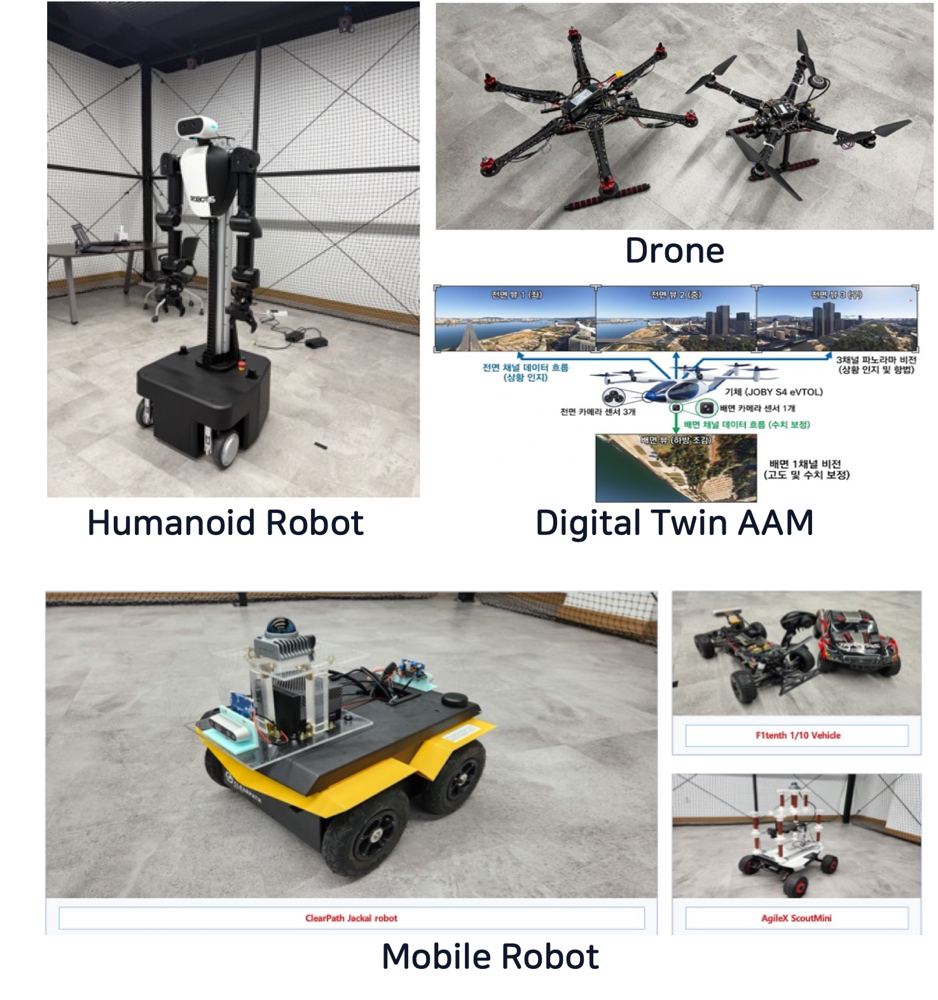

Jeonbuk National University
We are the Field Robotics Lab (FRL) at Jeonbuk National University with Prof. Daegyu Lee. We develop intelligent autonomous systems that operate reliably in the real world, especially in uncertainty-rich environments ranging from complex wild terrain to dense urban settings. Our goal is to move robotic intelligence beyond controlled laboratory conditions, enabling robots to perceive incomplete surroundings, make robust decisions, and adapt to changing terrain, disturbances, and unexpected failures. Our research integrates Spatial AI for vision-based mapping and navigation, RL-based adaptive control for resilient behavior, and autonomous systems spanning ground robots, mobile robots, humanoid robots, drones, and digital-twin AAM.
FRL's central research philosophy is to make robotic intelligence work in the field. We integrate Spatial AI, RL-based Adaptive Control, and Autonomous Systems so robots can perceive, map, plan, and act robustly under uncertainty across complex wild terrain, dense urban spaces, and other mission-critical real-world environments.

We welcome interns, M.S., and Ph.D. students who want to build field robots that perceive, navigate, and adapt in uncertain real-world environments, from wild terrain to complex urban spaces.
Please contact Prof. Daegyu Lee through the JBNU department website.